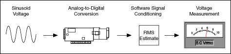
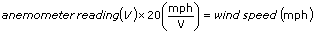
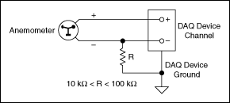
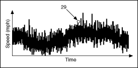

Most measurement devices can measure, or read, voltage. Two common voltage measurements are direct current (DC) and alternating current (AC).

Measuring DC Voltage
DC voltage is useful for measuring phenomena that change slowly with time, such as temperature, pressure, or strain. With DC signals, you want to accurately measure the amplitude of a signal at a given point in time.
Wind Speed Example
The following illustration shows a typical wiring diagram for an anemometer with an output range of 0 to 10 V, which corresponds to wind speed of 0 to 200 mph. Use the following equation to scale the data:

Using this equation, a measurement of 3 V would correspond to a wind speed of 60 mph (3 V � 20 mph/V = 60 mph).
Notice that the wiring diagram in the following illustration uses a resistor, R, because an anemometer is usually not a grounded signal source. If the anemometer transducer were already grounded, using a resistor would cause a ground loop and result in erroneous readings.

Averaging
Averaging can improve measurement accuracy for noisy and rapidly changing signals.
The following illustration shows what an actual wind speed might look like over time. Due to gusting winds, the speed values look noisy. Notice that the wind speed reading of 29 mph is a peak speed that might give the impression that the wind is holding at 29 mph. A better representation might be to take the average speed over a short period of time.

One common reason for averaging is to eliminate 50 or 60 Hz power line noise. The oscillating magnetic field around power lines can introduce noise voltages on unshielded transducer wiring. Because power line noise is sinusoidal, or shaped like a sine wave, the average over one period is zero. If you use a scan rate that is an integer multiple of the noise and average data for an integer multiple of periods, you can eliminate the line noise. One example that works for both 50 and 60 Hz is to sample at 300 samples per second and average 30 points. Notice that 300 is an integer multiple of both 50 and 60. One period of the 50 Hz noise is 300/50 = 6 points. One period of the 60 Hz noise is 300/60 = 5 points. Averaging 30 points is an integer multiple of both periods, so you can ensure that you average whole periods.
Measuring AC Voltage
AC voltage is a waveform that constantly increases, decreases, and reverses polarity. AC voltage is common in household, lab, and industrial devices because most power lines deliver AC voltage. You can measure AC voltages to determine the maximum, minimum, and peak-to-peak values of a signal. The peak-to-peak value of a signal is the maximum voltage swing, from maximum to minimum.
AC Voltage and Root Mean Square (RMS)
Voltage, current, and power are not constant values because AC signals alternate. However, you can use Vrms (root mean square) to measure voltage, current, and power such that a load connected to a 120 volts AC (VAC) source develops the same amount of power as that same load connected to a 120 volts DC (VDC) source. With RMS, the power formula for DC also works for AC. For sinusoidal waveforms, Vrms = Vpeak/square root of 2. Because voltmeters read Vrms, the 120 VAC of a typical U.S. wall outlet actually has a peak value of about 170 V.
Examples
Refer to the following VIs for examples of performing this measurement. You must have a driver installed to find examples for that driver.
NI-DAQmx
You can use the DAQmx - Data Acquisition VIs to perform this measurement. Find related examples:
�Voltage - SW-Timed Input
You also can use the DAQ Assistant Express VI to perform this measurement.
�Add�
�Find
NI-DMM
You can use the NI-DMM VIs to perform this measurement. Find related examples:
�Measuring Voltage
FieldPoint
You can use the FieldPoint VIs to perform this measurement. Find related examples:
�Getting Started
�Analyzing and Processing Signals
NI-SCOPE
You can use the NI-SCOPE VIs to perform this measurement. Find related examples:
�Measurements
You also can use the NI-SCOPE Express VI to perform this measurement.
 �Voltage - SW-Timed Input
�Voltage - SW-Timed Input �Add�
�Add�